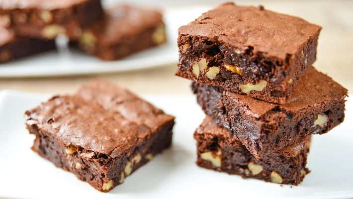

Brownie

Receita para ir além do bolo comum.
Ingredientes
- 6 colheres de sopa de margarina sem sal
- 3/4 xícara de chá de achocolatado
- 1/2 xícara de chá de chocolate em pó
- 1 e 1/4 xícara de chá de farinha de trigo
- 2 xícaras de chá de açúcar
- 4 ovos
- 2 pitadas de sal
- 1 colher de extrato ou essência de baunilha
- 1 tablete de chocolate meio amargo picado em cubinhos
- 1/2 xícara de chá de noz picada ou castanha-de-caju granulada
Preparo
- Misture os ovos e o açúcar
- Agregue todos os outros ingredientes até formar um creme uniforme
- Despeje em uma assadeira forrada com papel-manteiga e leve ao forno médio por 40 minutos
- Retire quando a parte de cima estiver corada e o interior levemente úmido (use um palito)